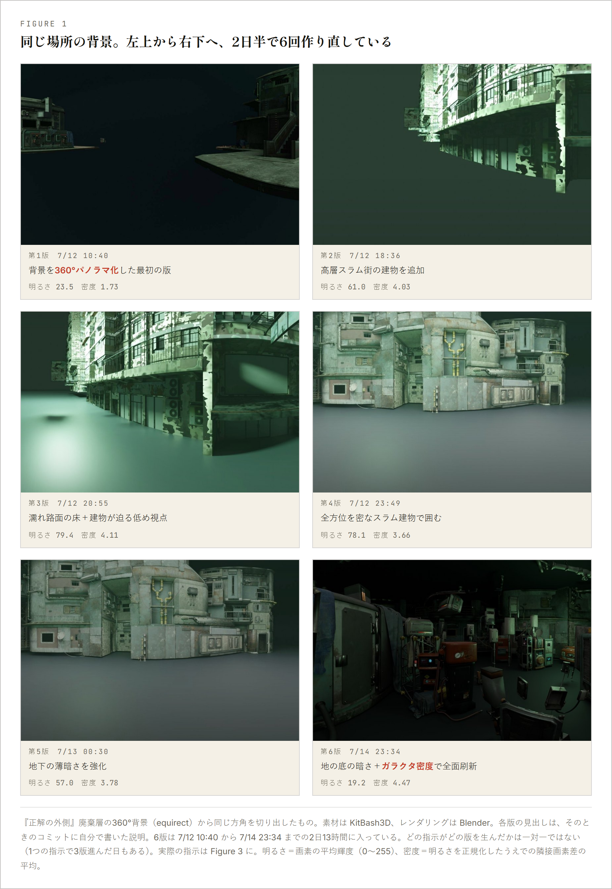
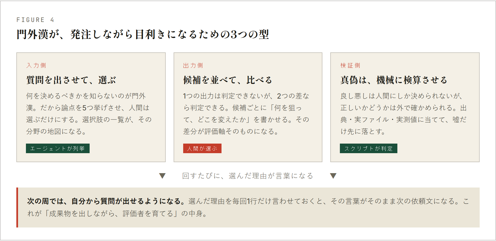
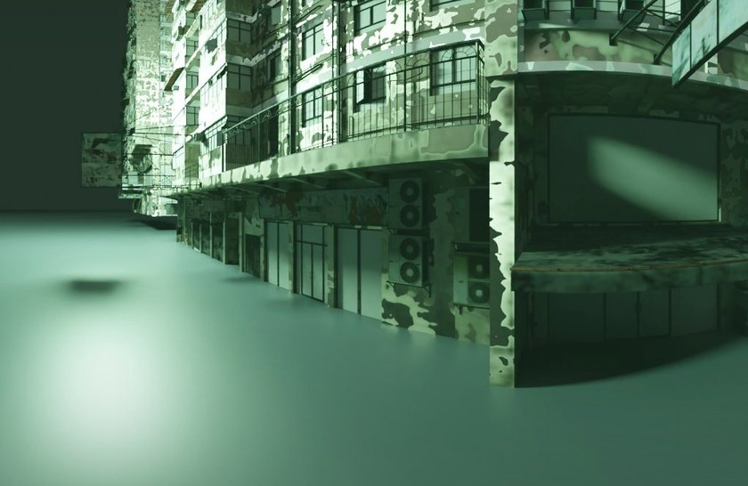
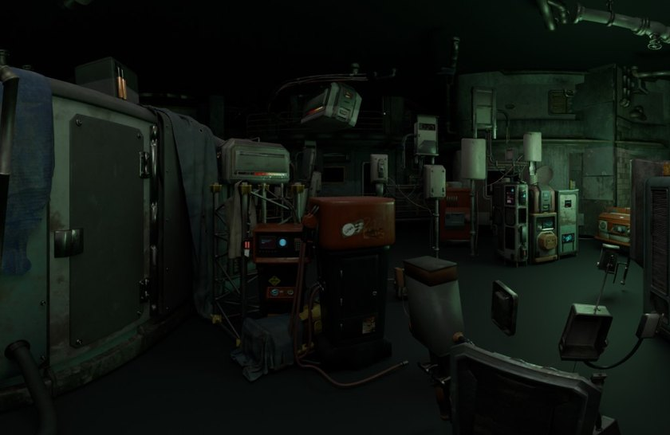
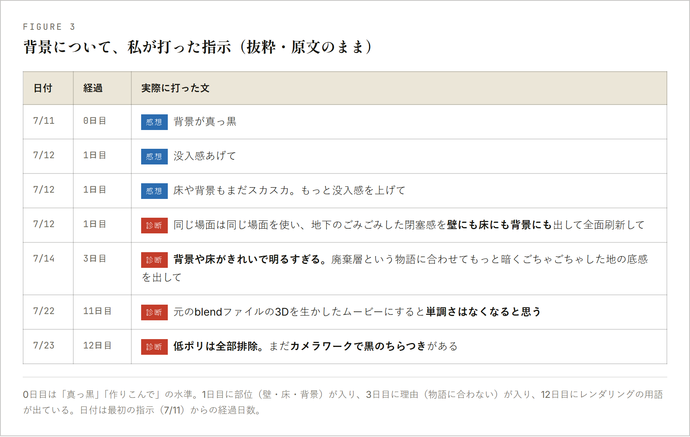
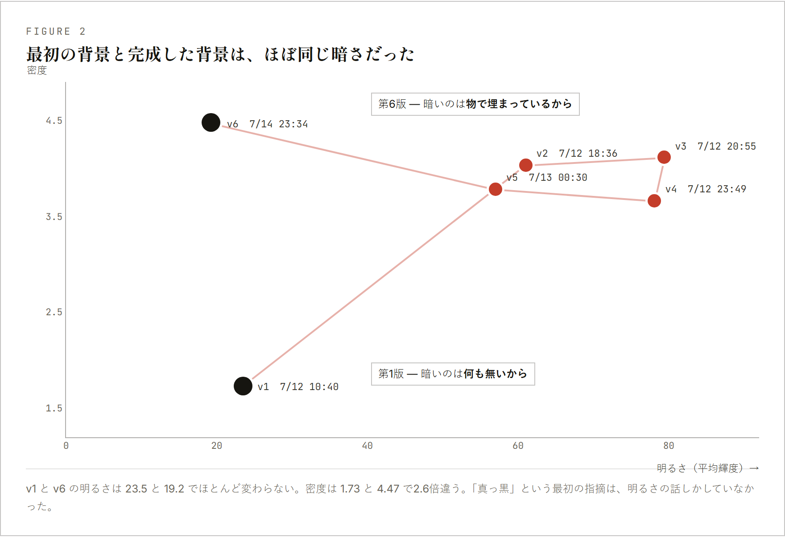
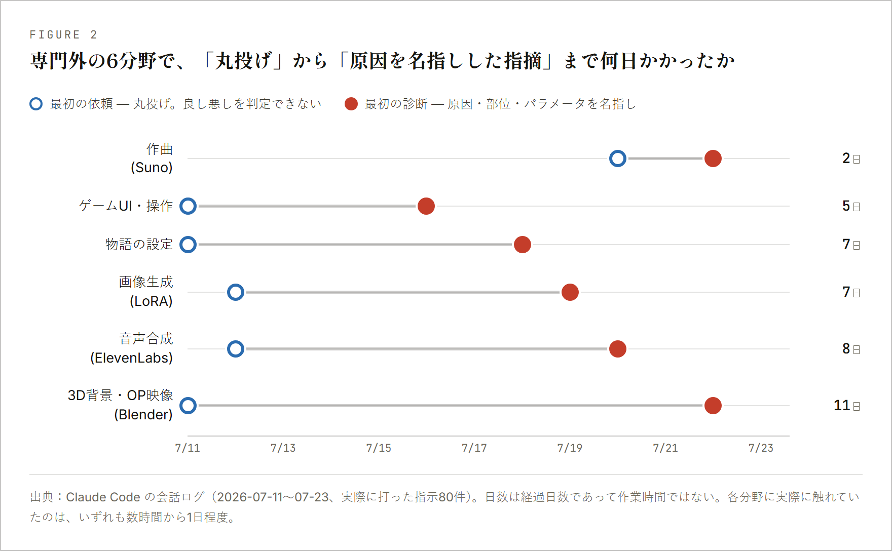
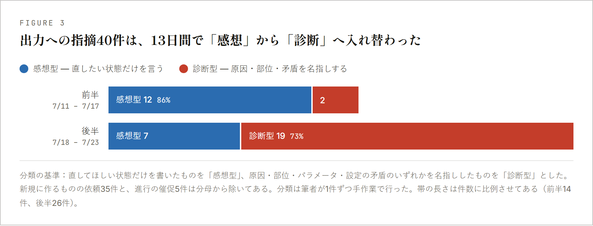
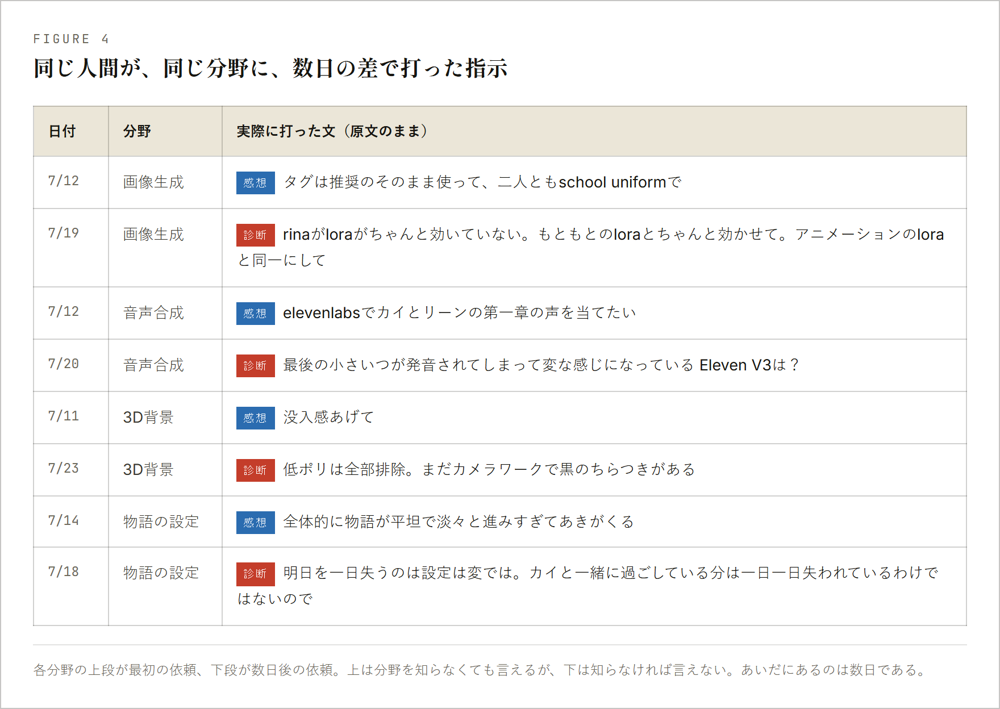

門外漢の目利き — 専門外のものを評価する方法
バグなら落ちます。「これで良いのか」は落ちません。 専門外の分野でAIに作らせると、良し悪しを判定できないまま完成品が手元に残ります。 判定できる人を用意しないと、平均が出荷される。 そのための3つの型と、6分野で測った効き目です。
自分で作れないものを人に頼むことは、昔からできました。ただし 受け取ったものを検分できる範囲でしか、頼めなかった。
クルーガーとダニングが1999年に書いています。 正しい判断を産み出す知識と、それを見分ける知識は同じところから来る。 片方を欠けば、もう片方も欠ける。専門外で出力を評価できないのは、この構造からです。
以前は、壁の越え方が学習しかありませんでした。数か月から数年かかる。 その時間が参入を止めていたので、判定できないまま大量に作ってしまう事故も起きませんでした。 エージェントが外したのは制作の側だけで、判定の側は外していません。
この13日間で専門外だったのは、3D、画像生成、音声合成、作曲、ゲームUI、物語の設計の6分野です。 以下では3Dを例に使いますが、起きたことはどの分野でも同じでした。
サウンドノベル『正解の外側』の廃棄層。同じ場所の360°背景を、2日半で6回作り直しています。 素材は KitBash3D、レンダリングは Blender。どちらも専門外でした。

並べれば違いは分かります。1枚ずつ出てきたときに言えるかが問題でした。 第2版から第5版までの4枚は、7月12日の14時11分と15時18分に打った2つの指示から連続して出ています。 次に背景について何か言えたのは、2日後です。
採点もエージェントにやらせればいい。私はそう考えて、やってみました。回りませんでした。 採点は返ってきますが、その採点が甘いのか辛いのか、こちらに判定できない。
第4版のコミットメッセージには「全方位を密なスラム建物で囲む閉塞感」と書いてあります。 エージェントが書いた文で、やったことと合っています。 床が一面のっぺりしていることは、書いてありません。 自己申告は、指示に答えた部分しか報告しません。
METRの実測が分かりやすい例です。平均5年の経験を持つ開発者16人に、 自分が熟知したリポジトリで246件の作業をさせました。 事前の予測は「24%速くなる」、終了後の自己評価は「20%速くなった」、実測は19%遅く。 熟知した領域で、この幅です。
マイクロソフトとカーネギーメロンの調査（ナレッジワーカー319人、一次事例936件）も添えておきます。 生成AIへの信頼が高い人ほど批判的思考の実行が少なく、自分への自信が高い人ほど多い。 自己申告のアンケートなので因果は言えませんが、検証の量を決めているのが出力の中身ではなく 使う側の自信の所在だった、という向きは読めます。
対処が違うので、最初に分けます。
| 真偽 — 正しいか | 良否 — 良いか | |
|---|---|---|
| 問い | 指定したものを使ったか。参照先は実在するか。数字は出典と一致するか | これは狙ったものになっているか |
| 決めるもの | 外部の事実 | 人間 |
| 機械化 | できる | できない |
| 門外漢の対処 | スクリプトに落として毎回走らせる | 自分を育てるしかない |
真偽は知識がなくても機械で守れます。やり方は 自動テストの実際 と 品質検問 に書きました。 残るのは右の列で、この記事はそこだけを扱います。
足場は1つだけです。 「AとBなら、Bのほうが自分の頭の中にあるものに近い」は、外の基準を必要としません。 出来の良し悪しが分からなくても、これは言える。ここから組み立てます。

何を決めるべきかを知らないので、良い質問は書けません。質問ごと出させます。
返ってくる一覧が、その分野の評価軸のリストになります。 自分で質問を考えるより速く、「何を知らなかったか」が先に見えます。
「視点の高さ」「霧の量」「光源の色温度」「素材の密度」。 第1版のときにこれを見ていたら、「暗い」以外の語が4つ、目の前にありました。 選べたかは分かりませんが、選択肢があることは分かったはずです。
1つでは判定できませんが、2つの差なら判定できます。 案ごとに「何を狙って、どこを変えたか」を書かせます。


2枚を並べて初めて、自分が欲しかったのが明るさではないと分かります。 差分がそのまま評価軸になる。 3案までにします。5案出すと選べなくなり、「おまかせで」に倒れます。
指定したものを使ったか、参照先は実在するか、出力の仕様は合っているか。 ここを目で見ている限り、良否を見る余力は残りません。
選択のあとに「なぜそれを選んだと理解したか」を1行書かせます。 その文が、次の依頼文になります。借り物の言葉で構いません。 私の場合、同じ語を3回ほど使ったあたりで、調べ直さずに書けるようになりました。
13日間で打った指示は80件、1日6件です。多くありません。 効いたのは回数ではなく、1周の待ち時間が数時間から数分になったことでした。
効いたかどうかは、自分の指示が変わったかで見ます。 同じ期間のログ80件を、1件ずつ読み直して分類しました。

「低ポリ」はポリゴン数の少ない簡易モデルのことで、遠景に混ざると輪郭が角張って安っぽく見えます。 12日前の私は、この語を知りませんでした。覚えたきっかけは、 エージェントが作業のたびに使った素材と設定を書いてきたことです。
6枚の明るさと、画面の密度を測りました。

第1版と第6版は、明るさがほぼ同じです。23.5 と 19.2。密度は 1.73 と 4.47 で2.6倍違う。 第1版が暗いのは何も置かれていないから、第6版が暗いのは物で埋まったうえで光を落としてあるからです。 最初に打った「背景が真っ黒」は、この2つを区別しない語でした。
密度も万能ではありません。第3版は 4.11、第6版は 4.47 で、数字はほとんど同じなのに見た目は別物です。 2軸でも足りない。足りていなかったのは視点の高さと素材の粗さでした。
3Dで起きたことが特殊でないかを見るため、6分野すべてを同じ基準で並べます。

80件のうち、新しく作らせる依頼35件と進行の催促5件は除きます。 残る40件が「出てきたものへの指摘」です。これを前半と後半で分けました。


言えるのは「割合が入れ替わった」までです。 前半の14%は、実体としてはたった2件です。
効いた実感があるのは5と6です。ただし比較していないので、1〜4を抜いたらどうなったかは分かりません。 言えるのは、診断型の指摘が増えた後半に、私が新しく始めていたのが 覚えた語を自分から使うことだった、という時期の一致までです。
| やってしまうこと | 何が起きるか |
|---|---|
| 「おまかせで」と答える | 軸の一覧をもらって、見ずに捨てている |
| 候補を5案以上出させる | 選べなくなり、結局おまかせに倒れる。3案まで |
| AIに採点させて終わりにする | 循環する。採点は下読み、決定は自分 |
| 状態だけを言い続ける | 方向が伝わらないので直らない。毎回「どこが」を1つ足す |
| 1回で見切る | 第3版で止めていたら、あの床のまま出していた |
質問も、候補出しも、検算も出せます。出せないのはどれを選ぶかと、違うと認めることの2つでした。 質問の解像度 でも同じ2つに行き着いています。 同じ人間が書いているので裏付けにはなりませんが、入口が「作らせる前」と「出てきた後」で正反対だったのに、 出口が同じだったことは書いておきます。
全15話・フルボイス・3つの結末のブラウザサウンドノベル『正解の外側』。 6枚目の背景は、第2話の廃棄層で360°見回せます。 作り方の詳細は 開発技術ガイド に置いてあります。
遊んでみる専門外で最初に作るべきものは、成果物ではなく自分の判定力です。
ただし判定力は、成果物を作らないと手に入りません。
だから、作りながら育てるしかない。
静かに壊れる不具合の捕まえ方は 品質検問 に、 作らせる前に決めさせる工程は 質問の解像度 に、 他の型は 新しい形の研究 に置いています。